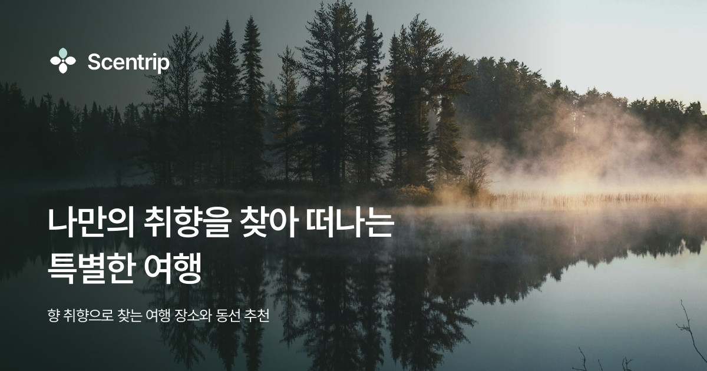

링크를 카카오톡 · 슬랙 · X 에 붙였을 때 펼쳐지는 카드입니다.
20개 화면 + index.html 의 <head> 에 OG · Twitter 메타를 넣었고,
카드 이미지는 assets/og/*.jpg 7종입니다.
화면별 카드
아래 탭을 눌러 화면을 바꿔 보세요. 카드 렌더는 각 서비스를 흉내 낸 근사치입니다.

카카오톡 — 제목 2줄 · 설명 2줄에서 잘립니다
센트립
슬랙 — 제목이 링크색으로, 이미지는 아래에 크게
X — summary_large_image · 제목 1줄에서 잘립니다
이미지 7종
1200×630 · JPEG 품질 90 · 70~300KB. 사진 위에 깊은 그린 스크림(왼쪽 88% → 오른쪽 12%)을 깔고 틸 오라를 한 점 얹었습니다. 글은 왼쪽 80px 여백에 맞춰 제목 60 / 설명 26, 자간 -3%. 로고 · 제목 · 설명 세 덩어리만 둡니다.
취향 검사 카드만 사진 대신 취향 테스트 표지(#stage-intro)의 배경을 그대로 옮겼습니다 —
다크 그린 세로 그라디언트 + 오로라 세 덩어리(screen) + 점 그리드 별밭 + 필름 그레인, 오른쪽에는 방랑자 타입 캐릭터를 원판 없이 올렸습니다.
나머지 배경 사진은 assets/og/photo/ 에 따로 두었습니다 — 전부 Unsplash 에서 받았고
원본 주소는 assets/og/photo/SOURCES.md 에 있습니다.
화면 안에서 쓰는 assets/place · assets/route 사진들은
출처 기록이 없어 공유 카드에는 쓰지 않았습니다 — 공유 카드는 카카오톡·페이스북이 이미지를 가져가
캐시·재배포하는 실제 공개 배포라서입니다.
이미지
배경 사진
쓰는 화면
화면별 메타
화면
og:url
og:image
비고
넣은 메타
개발 이식 때
절대 주소로. 카카오톡은 상대 경로 og:image 를 못 읽습니다. 프로토타입에는 https://scentrip.vercel.app 을 기준으로 적어 두었으니, 도메인이 정해지면 전 화면에서 이 문자열만 바꾸면 됩니다.
이미지 위치.assets/og/*.jpg → Next.js public/og/ 로 옮기면 메타에 적힌 /og/*.jpg 와 맞습니다.
상세 3종은 동적으로. 소식 상세 · 장소 상세 · 동선 상세는 글/장소/동선마다 제목 · 설명 · 이미지가 달라야 합니다. 각 파일 <head> 주석에 무엇으로 채울지 적어 두었습니다. 소식 상세만 og:type=article 입니다.
취향 결과 공유. 16유형 결과는 유형별 카드가 있어야 제 몫을 합니다 — og:title 을 “나는 OOO 타입”으로, 이미지는 유형 캐릭터로 16장을 따로 뽑는 것을 권합니다. 지금은 공통 og-taste.jpg 하나입니다.
로그인이 필요한 화면(내 여행 · 마이페이지 · 동선 만들기)은 공유될 일이 적습니다. 카드는 기본 이미지로 두되 robots: noindex 를 함께 검토해 주세요.
캐시. 카카오톡 · 페이스북은 OG 를 캐시합니다. 이미지를 바꾸면 파일명을 바꾸거나 각 디버거에서 캐시를 지워야 새 카드가 보입니다.
사진 출처. 공유 카드 배경 6장은 Unsplash 에서 받아 assets/og/photo/ 에 두고 원본 주소를 SOURCES.md 에 적었습니다. 화면 안 사진(assets/place · assets/route · assets/home · assets/about)은 출처 기록이 없으니 정식 오픈 전에 확인하거나 교체해 주세요.
이미지 다시 뽑기
문구만 바꿀 때는 tools/make-og.py 의 PAGES 를 고치고 다시 돌리면 됩니다. Pretendard 는 처음 한 번 자동으로 내려받습니다.